Мы собрали Вистериа-лейн из «Отчаянных домохозяек» как интерактивный сайт: тринадцать домов, холмы до горизонта, день и ночь, разрез дома и детективная игра с пятнадцатью уликами. Ни одного полигона не двигали руками: дома написаны кодом, сцену в Blender собирает Claude, а сайт — один HTML-файл на three.js. Разбираем весь путь по шагам, с промптами и ошибками, на которых мы учились.
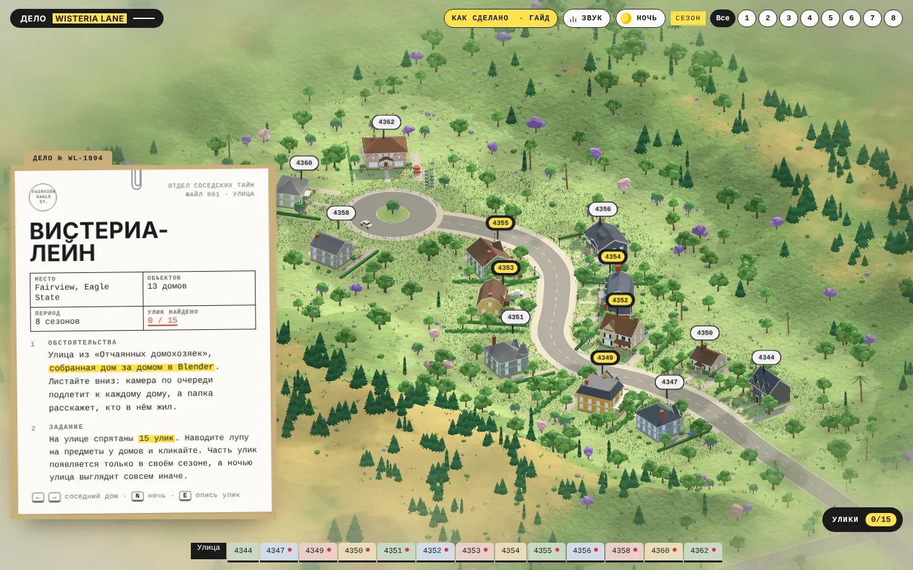
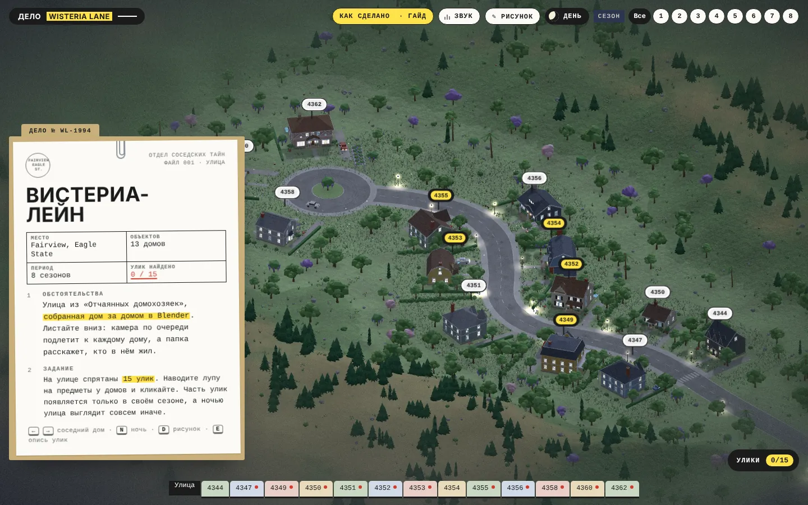
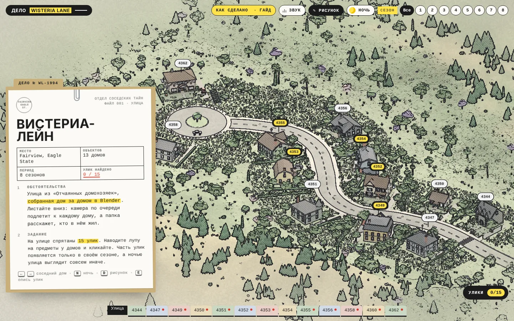
Что понадобится
Дорога на Вистериа-лейн изгибается, а дома стоят под разными углами к ней. Если начать с моделей, улица выйдет прямой и скучной. Поэтому первым делом переносим аэросъёмку в план в метрах: линию дороги, ширину проезжей части и тротуаров, место и поворот каждого участка, круглый тупик в конце.
Метры выбраны не случайно: Blender и three.js считают в метрах, поэтому один план становится общей правдой для сцены и сайта.
ПромптКарта в план
Вот аэроснимок улицы [название] с подписанными номерами домов. Перенеси его в план в метрах: — центральная линия дороги по [10–15] опорным точкам, сглаженная сплайном; — ширина дороги [9] м, тротуар [2] м с каждой стороны; — разворотный круг радиусом [15] м в конце улицы; — для каждого дома: номер, сторона улицы, расстояние вдоль дороги и угол поворота фасадом к ней. Сохрани план как Python-структуру и нарисуй схему сверху с номерами, чтобы я сверил её с картой.
РезультатПлан, по которому строится всё остальное
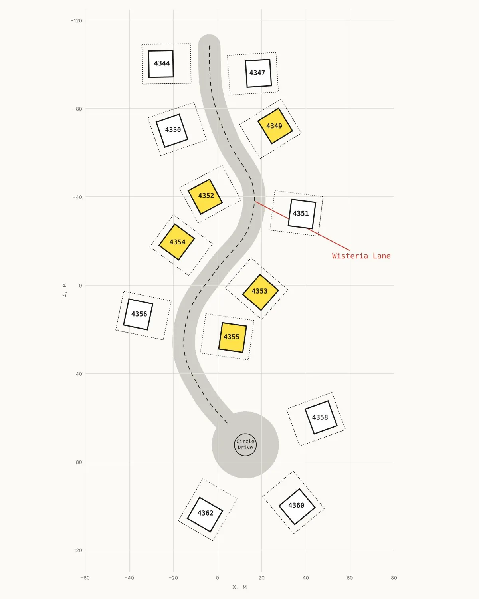
Проверка шага. Порядок номеров совпадает с картой, дорога повторяет изгибы, ни один участок не залезает на проезжую часть.
Вместо того чтобы лепить дома мышкой, просим Claude написать Python-скрипт с маленьким «конструктором». В нём есть коробка, цилиндр, крыши разных типов (двускатная, вальмовая, ломаная), окно с рамой, дверь, веранда, штакетник, дерево. Каждый дом — одна функция, которая собирает себя из этих деталей.
Напиши Python-генератор low-poly домов без внешних библиотек. Нужен класс Mesh со стеком трансформаций (сдвиг + поворот вокруг вертикали) и примитивы: коробка, цилиндр, крыши [двускатная, вальмовая, ломаная], окно с рамой и переплётом, дверь, веранда, штакетник. Материал задаётся именем, цвета храни в одном словаре. Скрипт должен работать двумя способами: — внутри Blender строить объекты через bpy, раскладывать их по коллекциям и сохранять .blend; — без Blender записывать каждый дом в отдельный glTF-файл. Покажи на одном простом доме, что оба режима дают одинаковый результат.
Почему кодом. Правка одной функции, например рамы окна, сразу чинит все тринадцать домов. А ещё код можно показать нейросети целиком, и она видит каждую деталь.
Проверка шага. Тестовый дом одинаково выглядит в Blender и в браузере, стоит на земле и смотрит фасадом на дорогу.
Теперь по очереди описываем каждый дом. Даём Claude кадры из сериала и короткое описание. Дом узнаётся прежде всего по силуэту крыши и цвету, поэтому начинаем с них, а детали добавляем потом.
ПромптОдин дом по кадрам
Смоделируй дом [номер] функцией в нашем генераторе. Кадры приложены. Силуэт: [этажей], крыша [тип и цвет], выступы [веранда, башенка, эркер]. Стены: [цвет и материал: доска, кирпич, штукатурка]. Окна: [сколько и где на каждой стене, ставни, круглое окно во фронтоне]. Вход: [крыльцо, колонны, цвет двери]. Двор: [дорожка, клумбы, машина, почтовый ящик, деревья]. Подвижные детали отдельными объектами: [флюгер, дверь, качели]. Отрендери дом с двух сторон и покажи мне, прежде чем переходить к следующему.
РезультатШесть домов героинь и соседей
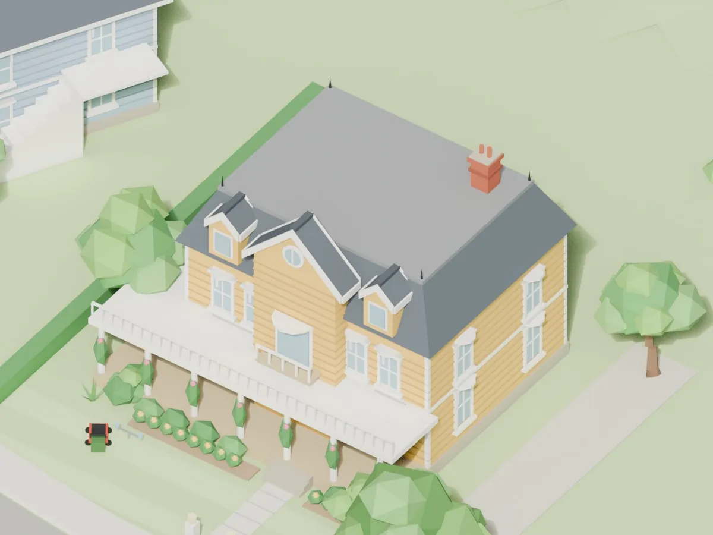
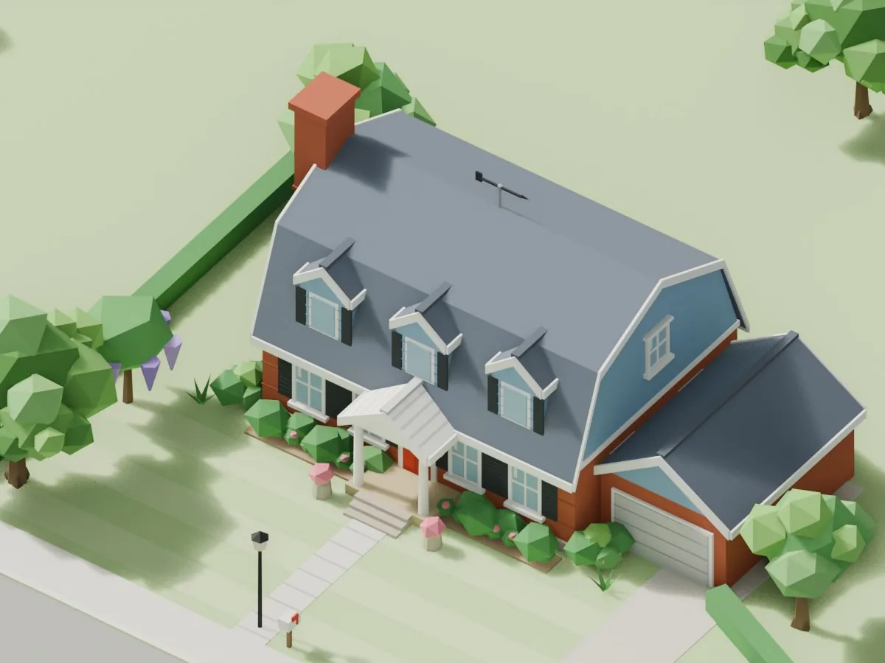
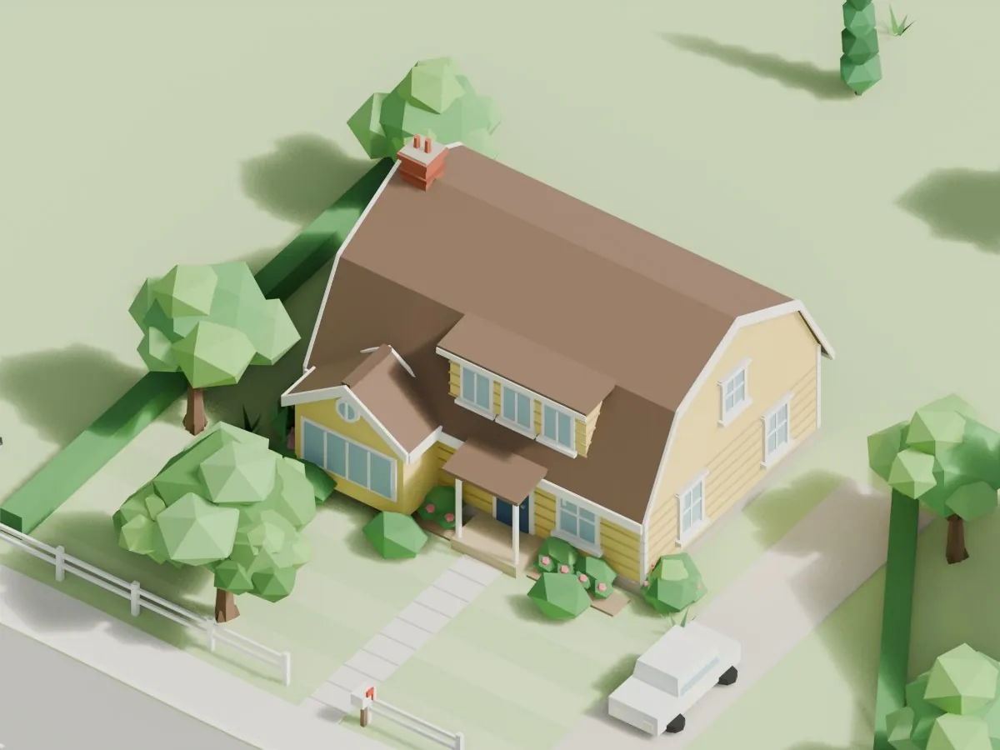
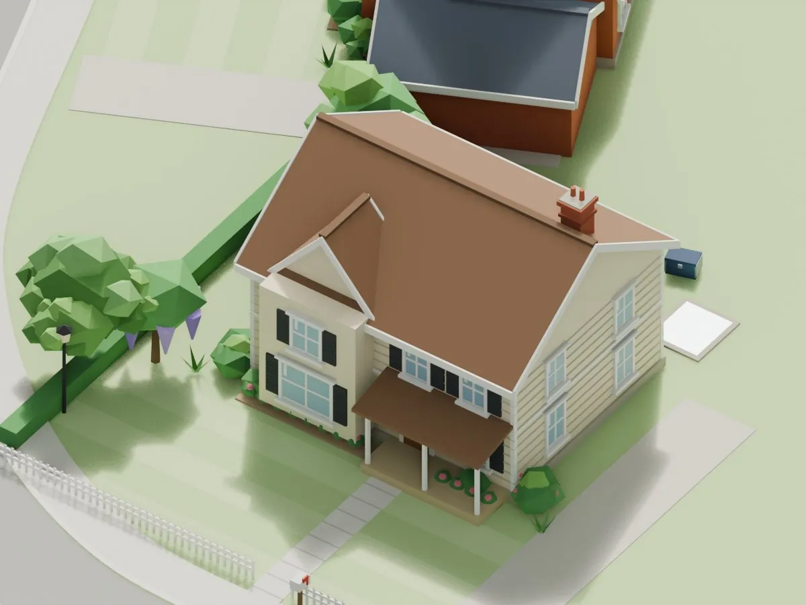
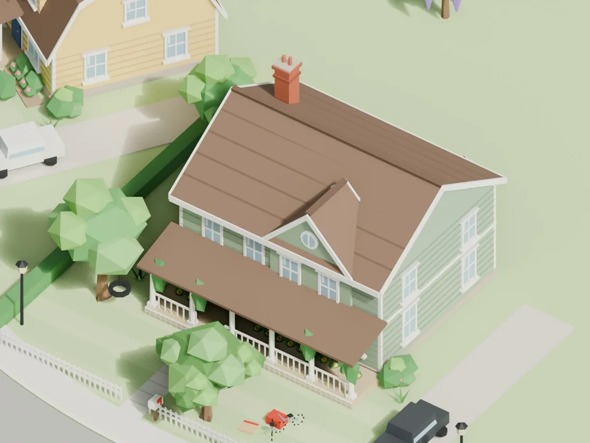
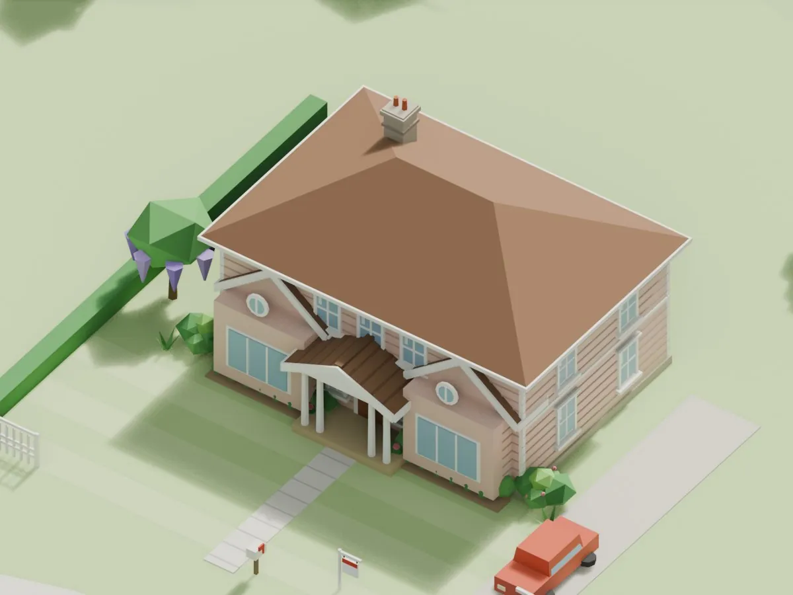
ДоработкаЭркеры и окна во фронтонах
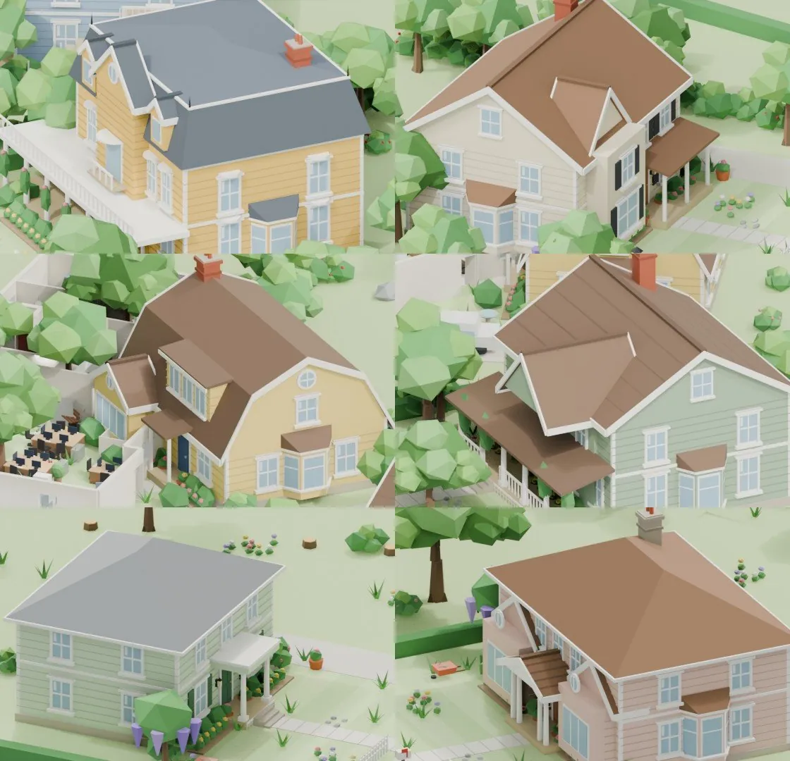
Не делай декорации. На съёмочной площадке часть домов — пустые фасады. В 3D дом видно со всех сторон, поэтому у каждого должна быть задняя стена с окнами.
Проверка шага. Каждый дом узнаётся по силуэту и цвету, окна есть на всех стенах, в крыше нет дыр ни с одного ракурса.
Сначала Claude управлял Blender через экран: кликал, вставлял код в текстовый редактор и нажимал «Run Script». Это работает, но медленно и ломко. С аддоном Blender MCP он запускает Python прямо в открытом Blender, смотрит на сцену снимком и проверяет объекты по именам.
{
"mcpServers": {
"blender": {
"command": "[полный путь к uvx, например /Users/имя/.local/bin/uvx]",
"args": ["blender-mcp"]
}
}
}Пиши лог в файл. Однажды Blender молча не сохранил сцену. С тех пор скрипт записывает рядом файл со строками «собрано», «сохранено», «выгружено». Claude читает его и сразу видит, на каком шаге что-то пошло не так.
Проверка шага. На просьбу «покажи сцену» Claude присылает снимок, а в списке объектов видны все дома.
Когда генератор и MCP готовы, вся сцена собирается одной командой. Claude запускает скрипт в Blender, тот раскладывает дома, рельеф, растения и улики по коллекциям, ставит камеру и солнце, сохраняет файл и выгружает модель для сайта. Потом Claude делает рендеры и смотрит на них сам.
ПромптСборка и проверка
Запусти генератор в открытом Blender через MCP и пересобери сцену. Потом отрендери каждый дом с двух сторон: [три четверти спереди] и [сзади сбоку]. Собери рендеры в одну сетку, посмотри сам и перечисли косяки по каждому дому: дыры в крыше, окна под кровлей, пустые стены, детали в воздухе, двор на дороге. Исправь найденное в коде и покажи сетку ещё раз.
РезультатСцена в Blender
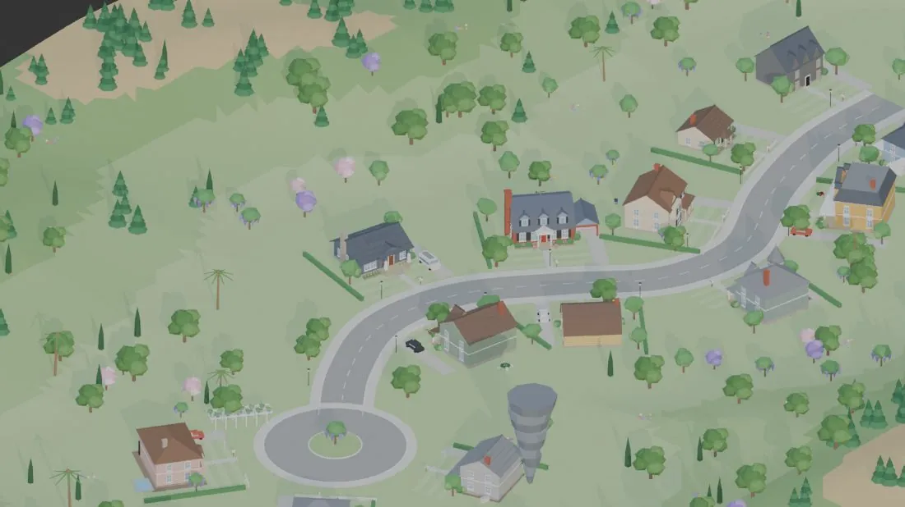
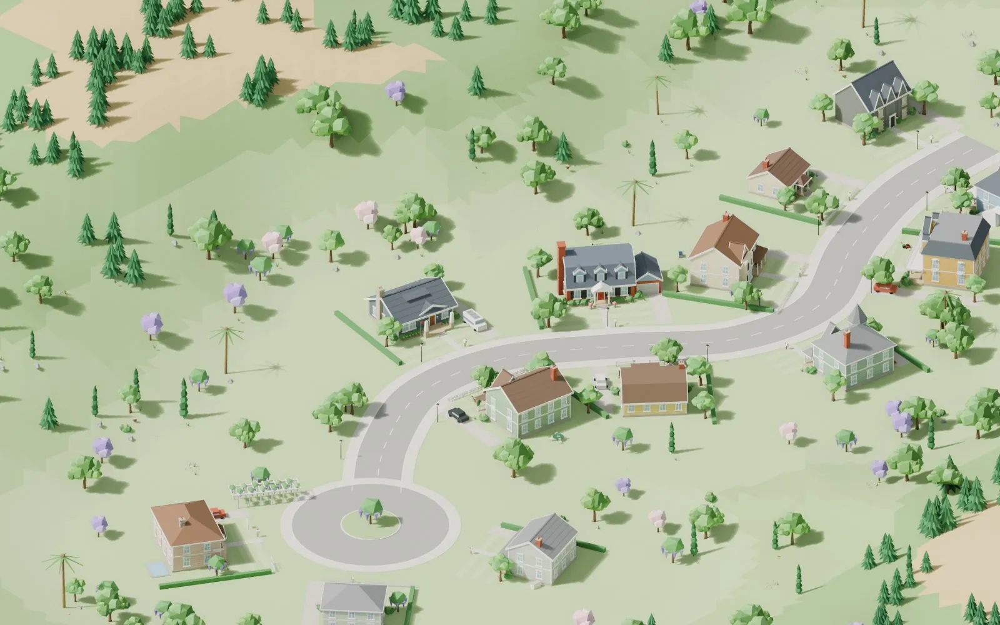
Проверка шага. Файл сцены обновился, рендер каждого дома чистый с обеих сторон, модель для сайта выгружена.
Площадка Colonial Street стоит у подножия Голливудских холмов: вокруг улицы земля поднимается и желтеет. Возле дороги и участков она плоская, дальше растут холмы. Дорога уходит в обе стороны и теряется в дымке, поэтому кажется, что мир продолжается.
ПромптРельеф и зелень
Добавь вокруг улицы рельеф: плоско в [30] м от дороги и участков, дальше холмы до [20] м высотой, выше к [северо-востоку]. Сетка [3] м у домов и [9] м до горизонта, швы без щелей. Продли дорогу за край улицы, чтобы она уходила в дымку. Засади всё растениями: [дубы, сосны, кипарисы, пальмы, кусты, камни, цветы] — гуще у дворов, реже на склонах. Ничего не ставь ближе [7] м к дороге и внутри участков, проверь отдельно изгибы дороги. Каждую посадку записывай через обёртку: вид растения, параметры и координаты.
РезультатЗелень и дорога, уходящая в дымку
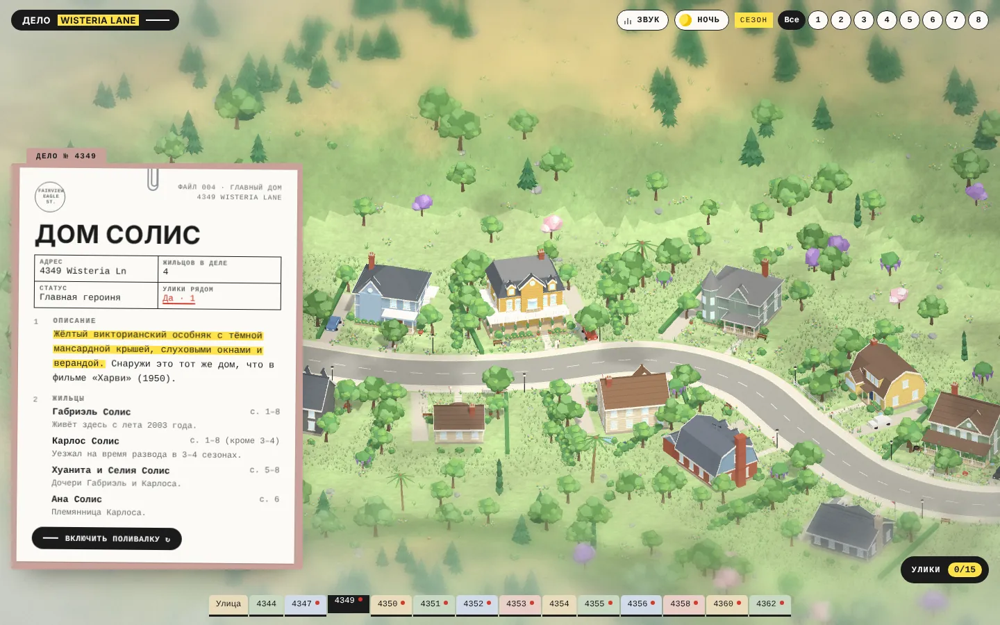
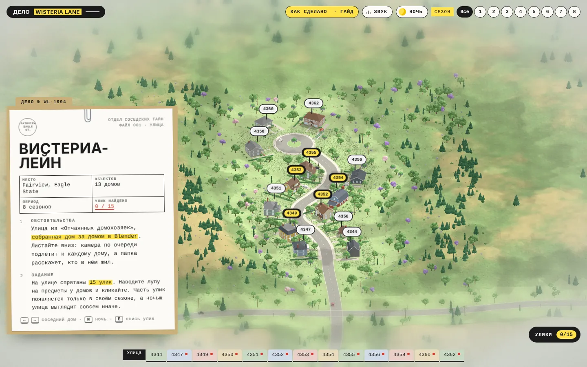
Проверка шага. На краю карты нет обрыва, деревья не растут из домов и машин, газон и изгороди не заходят на асфальт.
Полная сцена с растениями — больше миллиона вершин. Отдавать её в браузер как есть долго. Поэтому растения уходят в набор шаблонов и список координат, а координаты вершин хранятся целыми числами вместо дробных. В браузере шаблоны раскладываются по местам и склеиваются по материалам в несколько десятков сеток.
| Файл | Что внутри | Вес |
|---|---|---|
| Рельеф | Земля, дороги, тротуары, фонари | 0,9 МБ |
| Шаблоны растений | 176 вариантов деревьев, кустов и камней | 1,7 МБ |
| Посадки | 2 943 растения: координаты, масштаб, поворот | 0,1 МБ |
| 13 домов | Отдельный файл на дом | 4,2 МБ |
| Улики и интерьер | 15 улик, торнадо, самолёт, разрез дома Бри | 0,3 МБ |
Оптимизируй выгрузку для сайта. Растения запиши как набор шаблонов, по [3] варианта на вид, и отдельный JSON с координатами, масштабом и поворотом каждой посадки. Сожми геометрию через KHR_mesh_quantization: позиции в int16, нормали в int8. На сайте склей растения по материалу в [5] полос вдоль улицы, чтобы работало отсечение по камере. Покажи вес каждого файла до и после.
Подвох хостинга. Некоторые хостинги не отдают файлы с расширением .bin. Буферы можно переименовать и поправить ссылку в .json: сам glTF расширение не проверяет.
Проверка шага. Деревья на сайте стоят там же, где в Blender, все прямые и своего размера, а папка с моделями весит меньше 10 МБ.
Сайт — один HTML-файл. Камера ортографическая, как в изометрических играх. Скролл ведёт её от общего плана к каждому дому по очереди: для дома считается ракурс три четверти и масштаб, при котором он целиком помещается в свободную от текста часть экрана. Между домами камера чуть отъезжает по дуге.
ПромптКаркас сайта
Сделай сайт на three.js из этих glTF-файлов, одним HTML-файлом. Ортографическая изометрическая камера, по скроллу облёт [13] домов: общий план, потом каждый дом по очереди. У каждого дома карточка с текстом [слева], сам дом — в свободной части экрана целиком. Прелоадер с реальным прогрессом загрузки. На телефоне карточка снизу, дом сверху. Проверяй сам в браузере: снимай экран на ширине [1440] и [390] px и чини то, что видишь.
РезультатПрелоадер, дом крупно и телефон
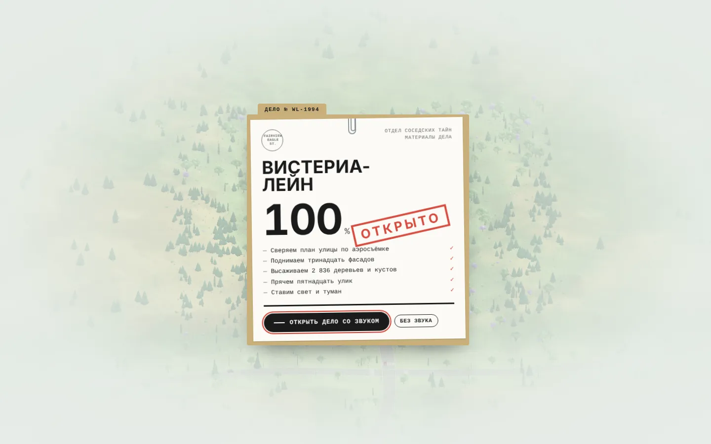
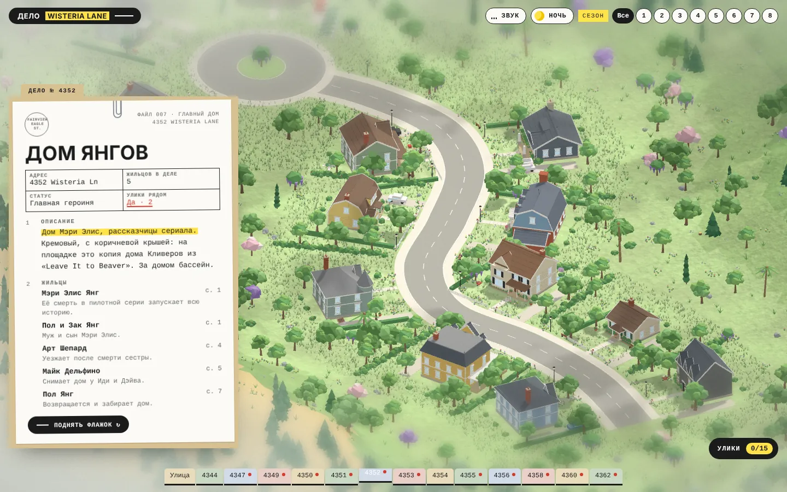
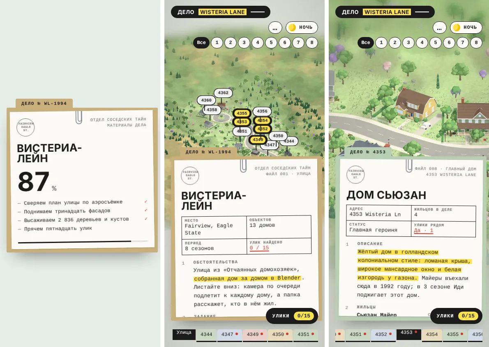
Проверка шага. На каждом шаге скролла дом целиком виден рядом с карточкой, на телефоне нет горизонтальной прокрутки.
Модели одинаковые, а настроение делает свет. Все эффекты живут в шейдерах, то есть в маленьких программах для видеокарты, поэтому сайт остаётся лёгким.
ПромптНастроение
Докрути визуал сайта, всё через шейдеры, без тяжёлых библиотек: — свет [предвечерний]: тёплое солнце, длинные тени, мягкое затемнение под домами и деревьями; — дымка от центра кадра, чтобы карта уходила в горизонт; — ветер в листве и тени облаков; — размытие краёв кадра, резким оставь дом в фокусе; — ночной режим: выборочно горящие окна, ореолы фонарей, светлячки. Если кадр тормозит, сайт сам снижает чёткость, но не переключает качество туда-обратно.
РезультатДень в фокусе и ночь
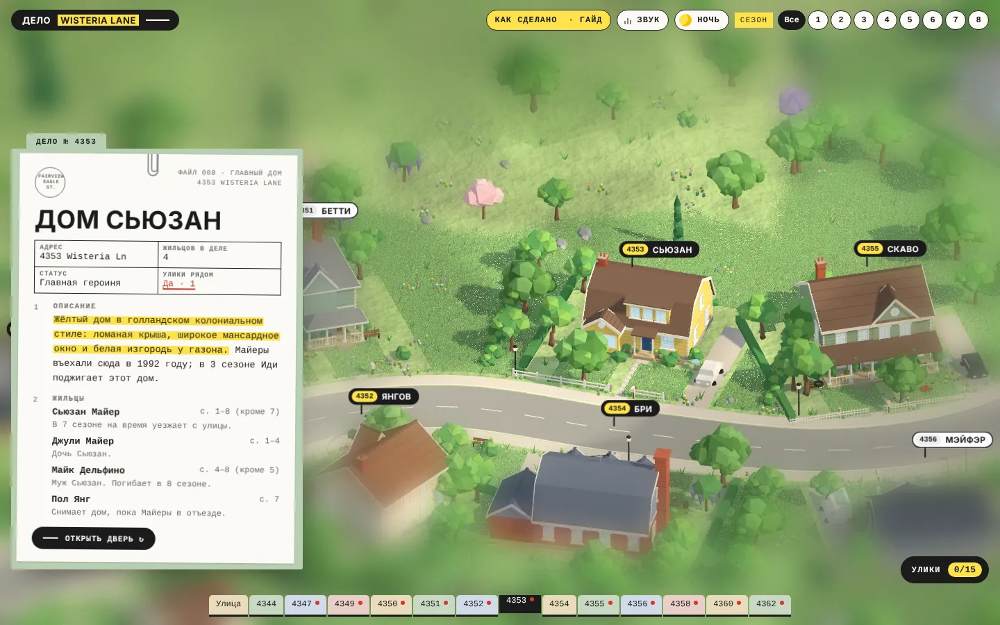
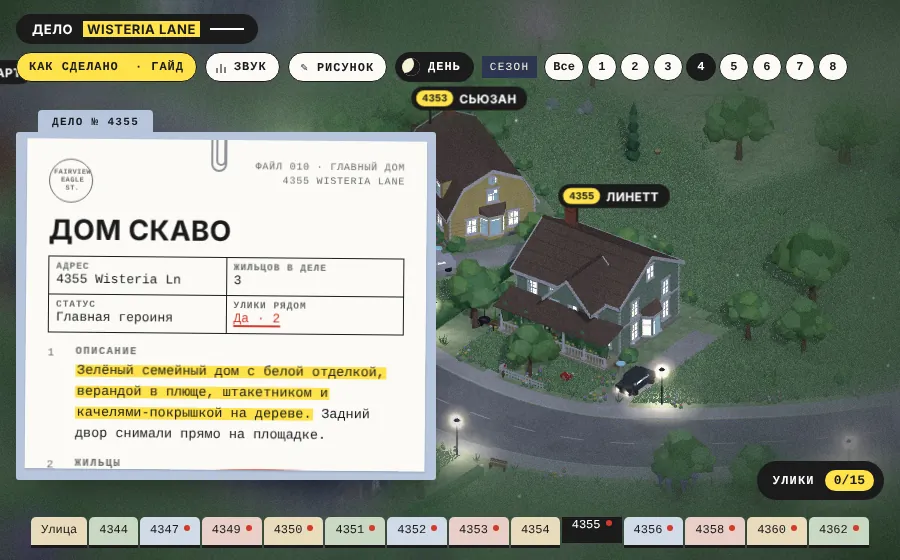
Тени. Карту теней строй вокруг того, что реально видно на экране. Если строить её вокруг точки, куда смотрит камера, на широком экране углы кадра остаются без теней.
Проверка шага. При переключении ночи нет вспышек, тени лежат по всему кадру, картинка не меняется сама по себе через несколько секунд.
Чтобы улицу хотелось пройти до конца, мы спрятали на ней предметы из сюжета: письмо шантажиста на крыльце Мэри Элис, морозильник Карен, газонокосилку садовника, упавший самолёт. Часть улик есть только в своём сезоне, поэтому переключатель сезонов становится частью игры.
ПромптИгровая механика
Преврати карту в игру: спрячь у домов [15] сюжетных предметов, часть показывай только в своём сезоне. Ненайденные пусть мягко переливаются, без мигания. Найденную улику сфотографируй из кадра в полароид и положи в опись; у ненайденных в описи — загадки. Прогресс сохраняй в браузере. После последней улики покажи финальный отчёт со снимками и рассказом о том, как сделан сайт.
РезультатОпись, разрез и финал
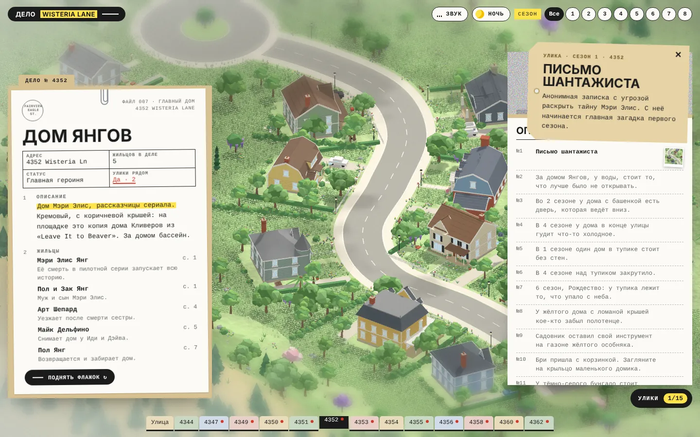
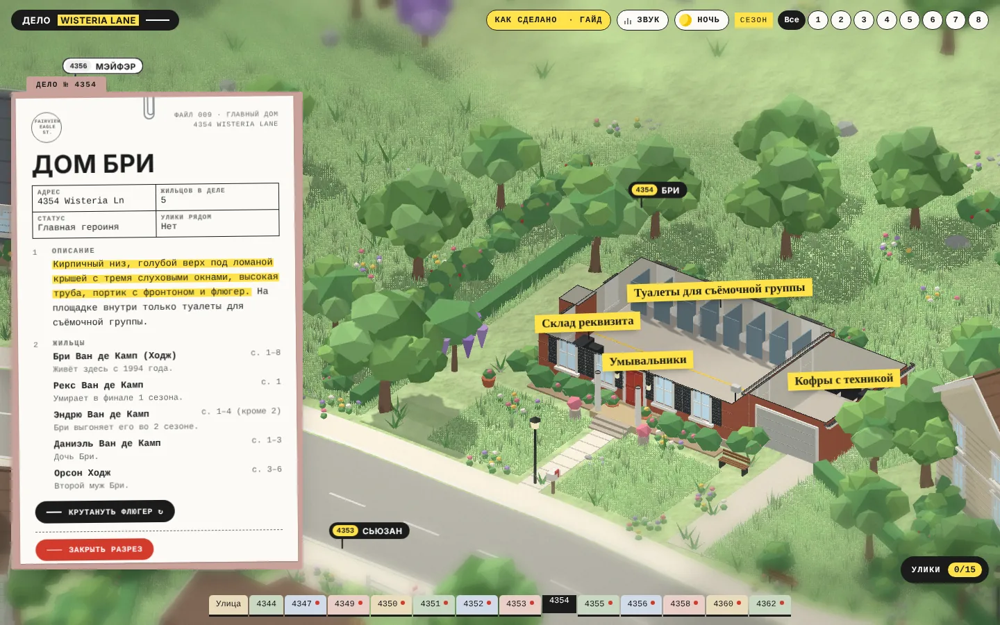
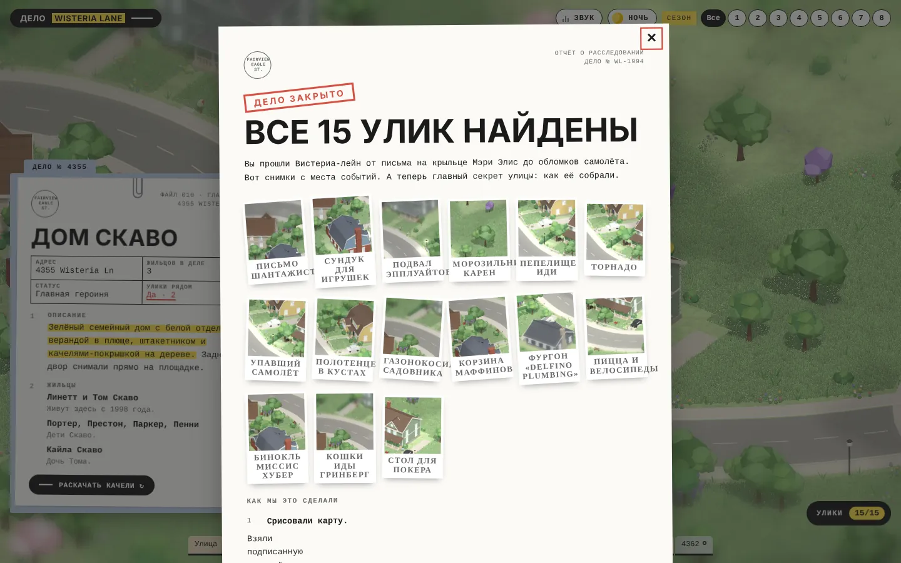
Проверка шага. Каждую улику можно найти без подсказки, прогресс переживает перезагрузку, финал открывается ровно на последней.
Последний шаг — пройти сайт глазами зрителя и честно записать всё, что выглядит странно. Большую часть проверок Claude делает сам: снимает экран в браузере, рендерит дома в Blender и сверяет геометрию с дорогой скриптом. Вот что мы нашли и починили у себя.
Было и сталоПервая версия и финал
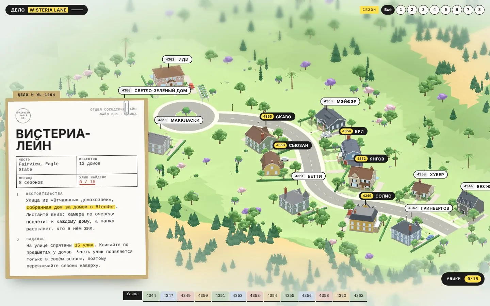
Проверь проект целиком, как зритель. 1. Сними сайт на ширине [1440] и [390] px: общий план, каждый дом, ночь, игра до финала. 2. Отрендери каждый дом в Blender с двух сторон. 3. Скриптом проверь, что газон, заборы, изгороди и деревья не заходят на дорогу и тротуар. 4. Посмотри консоль браузера на ошибки. Составь список косяков с файлом и причиной, исправь и покажи, что изменилось.
Проверка шага. В консоли нет ошибок, на рендерах нет дыр и пустых стен, скрипт не находит ни одного элемента двора на дороге.
Итог
Проверь себя